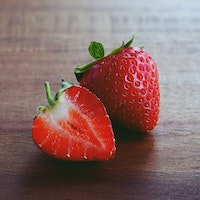
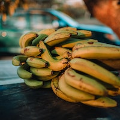
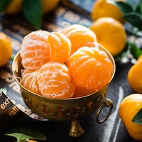
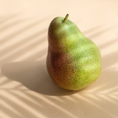

Jagoda
Jagoda je mala crvena bobica sa slatkim i sočnim mesom. Ona ima
karakterističan okus koji je slatkast, kiselkast i osvežavajući.
Jagode su bogate vitaminom C, vlaknima i antioksidantima, što ih čini
izuzetno zdravom voćkom. Mogu se jesti sirove, dodavati u voćne
salate, kolače ili ih koristiti za pravljenje džemova i drugih slatkih
namaza.
07.03.2022

Banana
Banana je vrsta voća koja je ovalnog oblika, obično žute boje kore s
bijelim mesom unutar kore. Banane su bogate vlaknima, vitaminima i
mineralima, kao što su vitamin C, vitamin B6, kalij, magnezij i folna
kiselina. One su također dobar izvor ugljikohidrata i prirodni
zaslađivač. Banane se često konzumiraju sirove, ali mogu se koristiti
i za pripremu različitih jela, kao što su smoothiji, palačinke ili
kolači.
07.03.2022

Mandarina
Mandarina je mala citrusna voćka sferičnog ili blago spljoštenog
oblika, koja obično ima svijetlu narančastu kožu koja se lako ljušti.
Unutar kore, mandarina ima sočno meso koje je slatko i aromatično, a
koje je obično podijeljeno na male segmente. Mandarine su bogate
vitaminom C, antioksidansima i vlaknima, a također sadrže i vitamine A
i B. Mandarine se često konzumiraju svježe, ali se mogu koristiti i za
pripremu različitih jela, poput salata, slatkiša, pekmeza ili umaka.
Mandarine su popularne tijekom zime kada su dostupne kao sezonsko
voće.
07.03.2022

Kruska
Kruška je voće ovalnog ili kruškolikog oblika, koje obično ima glatku
tanku kožu koja može biti žute, zelene, smeđe ili crvene boje, ovisno
o sorti. Unutar kore, kruška ima sočno, slatko i mirisno meso koje je
bijele do kremaste boje. Kruške su bogate vlaknima, vitaminom C i K,
kalijem i drugim važnim mineralima. One se često konzumiraju svježe,
ali se također mogu koristiti za pripremu različitih jela, kao što su
kolači, umaci, kompoti ili pekmezi. Kruške su dostupne tijekom jeseni
i zime, kada su sezonsko voće.
07.03.2022